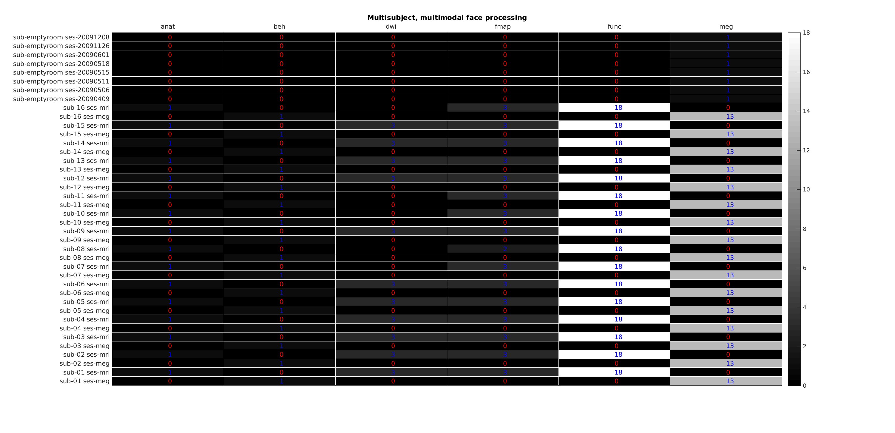
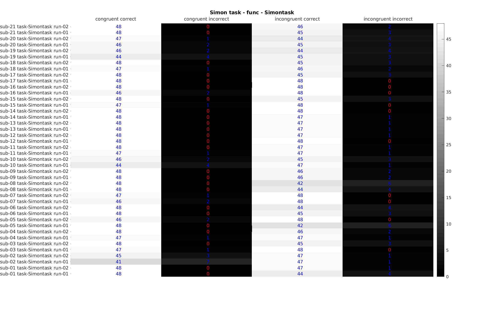
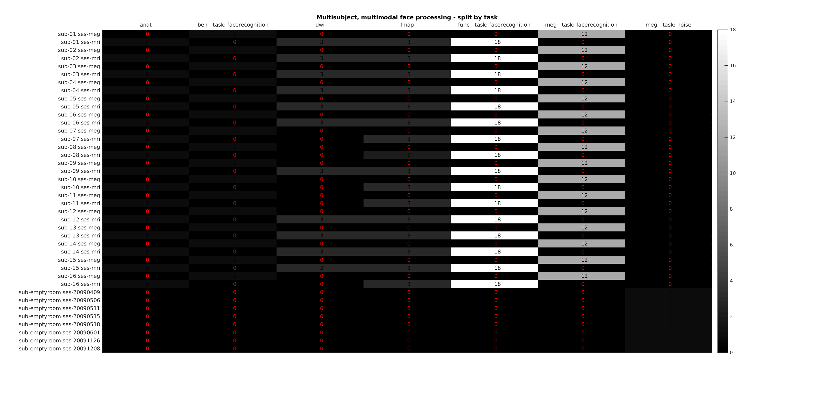

Function description
- namespace bids
- bids.derivatives_json(varargin)
Creates dummy content for a given BIDS derivative file.
USAGE:
json = derivatives_json(derivative_filename, 'force', false)
- Parameters:
derivative_filename (
char)force (
logical) – when true it will force the creation of a json content even when the filename contains no BIDS derivatives entity.
- bids.init(varargin)
Initialize dataset with README, description, folder structure…
USAGE:
bids.init(pth, ... 'folders', folders, ,... 'is_derivative', false,... 'is_datalad_ds', false, ... 'tolerant', true, ... 'verbose', false)
- Parameters:
pth (
char) – directory where to create the datasetfolders (
structure) – define the folder structure to create.folders.subjectsfolders.sessionsfolders.modalitiesis_derivative (
logical)is_datalad_ds
- class bids.Description
Class to deal with dataset_description files.
USAGE:
ds_desc = bids.Description(pipeline, BIDS);
- Parameters:
pipeline (
char) – pipeline nameBIDS (
structure or char) – output from BIDS layout to identify the source dataset used when creating a derivatives dataset Can also be the path to a dataset_descriptin.json file
- Constructor Summary
- Description(varargin)
USAGE:
ds_desc = bids.Description(pipeline, BIDS);
- Property Summary
- content
dataset description content
- is_derivative = false
logical
- pipeline = ''
name of the pipeline used to generate this derivative dataset
- Method Summary
- set_derivative()
USAGE:
ds_desc = ds_desc.set_derivative();
- set_field(varargin)
USAGE:
ds_desc = ds_desc.set_field(key, value); ds_desc = ds_desc.set_field(struct(key1, value1, ... key2, value2));
- append(key, value)
Appends an item to the dataset description content.
USAGE:
ds_desc = ds_desc.append(key, value);
- write(folder)
Writes json file of the dataset description.
USAGE:
ds_desc.write([folder = pwd]);
- bids.copy_to_derivative(varargin)
Copy selected data from BIDS layout to given derivatives folder.
USAGE:
bids.copy_to_derivative(BIDS, ... 'pipeline_name', '', ... 'out_path', '', ... 'filters', struct(), ... 'unzip', true, ... 'force', false, ... 'skip_dep', false, ... 'use_schema, true, ... 'verbose', false, ... 'tolerant', false);
- Parameters:
BIDS (
structure or char) – BIDS directory name or BIDS structure (from bids.layout)pipeline_name (
char) – name of pipeline to useout_path (
char) – path to directory containing the derivativesfilter (
structure or cell) – list of filters to choose what files to copy (see bids.query)unzip (
logical) – Iftruethen all.gzfiles will be unzipped after being copied. For MacOS and Unix system, this will require a version of gunzip >= 1.6.force (
logical) – If set tofalseit will not overwrite any file already present in the destination.skip_dep (
logical) – If set tofalseit will copy all the dependencies of each file.tolerant (
boolean) – Defaults tofalse. Set totrueto turn errors into warnings.use_schema (
logical) – If set totrueit will only copy files that are BIDS valid.verbose (
logical)
All the metadata of each file is read through the whole hierarchy and dumped into one side-car json file for each file copied. In practice this “unravels” the inheritance principle.
Example
dataset = fullfile(pwd, 'bids-examples', 'qmri_vfa'); output_path = fullfile(pwd, 'output'); filter = struct('modality', 'anat', 'sub', '01'); pipeline_name = 'SPM12'; bids.copy_to_derivative(dataset, ... 'pipeline_name', pipeline_name, ... 'out_path', output_path, ... 'filter', filter, ... 'force', true, ... 'unzip', false, ... 'verbose', true);
- bids.report(varargin)
Create a short summary of the acquisition parameters of a BIDS dataset.
The output can be saved to a markdown file and/or printed to the screen.
USAGE:
bids.report(BIDS, 'filter', filter, ... 'output_path', output_path, ... 'read_nifti', read_nifti, ... 'verbose', verbose);
- Parameters:
BIDS (
char or structure) – Path to BIDS dataset or output of bids.layout [Default = pwd]filter (
structure) – Specifies which the subject, session, … to take as template. [Default = struct(‘sub’, ‘’, ‘ses’, ‘’)]. See bids.query for more information.output_path (
char) – Folder where the report should be printed. If empty (default) then the output is sent to the prompt.read_nifti (
logical) – If set totrue(default) the function will try to read the NIfTI file to get more information. This relies on thespm_vol.mfunction from SPM.verbose (
logical) – If set tofalse(default) the function does not output anything to the prompt.
- bids.validate(root, options)
BIDS Validator
USAGE:
[sts, msg] = bids.validate(root, options)
- Parameters:
root – directory formatted according to BIDS [Default: pwd]
- Returns:
- sts:
0if successful
- msg:
warning and error messages
Command line version of the BIDS-Validator: https://github.com/bids-standard/bids-validator
Web version: https://bids-standard.github.io/bids-validator/
- bids.diagnostic(varargin)
Create a diagnostic figure for a dataset.
list the number of files for each subject split by: - modality - task (optional)
list the number of trials for each event type
USAGE:
diagnostic_table = diagnostic(BIDS, ... 'use_schema', true, ... 'output_path', '', ... 'filter', struct(), ... 'split_by', {''})
- Parameters:
BIDS (
structure or char) – BIDS directory name or BIDS structure (frombids.layout)split_by (
cell) – splits results by a given BIDS entity (now onlytaskis supported)use_schema (
logical) – If set totrue, the parsing of the dataset will follow the bids-schema provided with bids-matlab. If set tofalsefiles just have to be of the formsub-label_[entity-label]_suffix.extto be parsed. If a folder path is provided, then the schema contained in that folder will be used for parsing.out_path (
string) – path to directory containing the derivativesfilter (
structure or cell) – list of filters to choose what files to copy (see bids.query)trial_type_col (
char) – Optional. Name of the column containing the trial type. Defaults to'trial_type'.verbose (
logical) – Optional. Set to false to not show the figure. Defaults totrue.
Example
BIDS = bids.layout(path_to_dataset); diagnostic_table = bids.diagnostic(BIDS, 'output_path', pwd); diagnostic_table = bids.diagnostic(BIDS, 'split_by', {'task'}, 'output_path', pwd);

output of diagnostic

output of diagnostic for events

output of diagnostic split by task